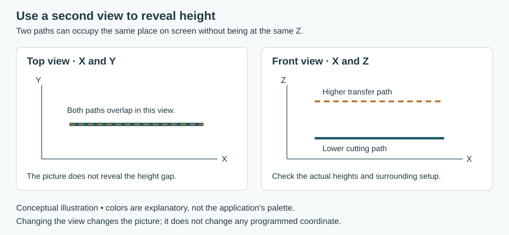

RADONIX · ROUTERXYZ+TC · CHAPTER 15
Operator Manual · English · 8 October 2026
G-code View and 3D Preview
Read the program text and its graphical path together, inspect the job from useful directions, and distinguish a display change from an instruction that affects the next machine operation.
Expanded draft for review. The preview represents prepared program geometry and reported display state. It does not measure the physical setup or certify collision clearance. Use the actual machine and approved setup information alongside it.
15.1 Understand the two views and the questions they can answer
After a job has been prepared, the main window gives you two ways to inspect it. The G-code view displays the program's text, line by line. The 3D preview displays the prepared movement geometry. They describe the same accepted source from different viewpoints: one shows instructions and their locations in the file, while the other helps you understand where movements lie in space.
You do not need to read every instruction as a programmer. Begin with practical questions: is this the expected shape, is it in the right place, are the different cutting depths plausible, and where are the movements between features? When something looks unusual, use the link between the views to locate the relevant text and report it to the person responsible for the job.
The preview is a path, not a photograph of the finished part
The displayed lines represent prepared movements. They are not a complete solid model of the remaining material, and their visible thickness does not establish the cutter diameter or the width of a machined groove. Several passes can overlap when seen from above. A raised transfer and a cut may also look like the same line until you examine the job from another direction.
The machine table or travel envelope shown in the scene is based on configured geometry. It is not a live scan of the stock, clamps or accessories. An obstruction can be absent from the preview while being very real on the bed. Keep the physical setup checks from Chapter 2 and the file checks from Chapter 14 alongside the visual review.
| View or indication | Useful for | Does not establish |
|---|---|---|
| Program text | Identifying source lines, comments, instructions and reported problem locations. | Physical completion or correct workholding. |
| Graphical path | Recognizing the shape, relative position, passes and transfers. | A complete model of material removal or every collision hazard. |
| Selection highlight | Showing the line or path portion currently being inspected. | That the machine is executing that portion. |
| Position and reference markers | Relating displayed coordinates and job placement to the scene. | A physical measurement of the tool tip, stock or fixture. |
| Progress coloring | Understanding the displayed execution or selected-start state. | Inspection or acceptance of the finished machining. |
Inspect a settled job first
For learning and detailed pre-run review, use a successfully prepared job while the machine is in a settled state. Wait until loading and preview preparation have ended. Read the full filename and any diagnostics before studying the picture. An attractive outline does not resolve a rejected file or an ignored equipment action.
Moving the camera, zooming and changing a standard view alter the picture, not the work origin or machine axes. A simple source-line or path selection is also an inspection action. However, double-clicking a source line while stopped can select a restart line for the next Run request. Use single clicks for ordinary inspection and learn the different gestures before relying on them.
The linked text and graphical views
Capture the actual main window with a harmless accepted training job. Label the source-line numbers, text selection, graphical path, file identity, preview toolbar and status area. Show one selected movement in both views; identify it as inspection selection, not an executing movement.
Suggested file: assets/images/15-linked-views.png.
Your goal in this chapter is to inspect deliberately and recover a useful view when the picture becomes confusing. You should be able to explain what you selected, which direction you are viewing from and what evidence still has to come from the actual machine.
15.2 Read and navigate the source without editing it
The source view retains the physical lines of the file, including comments and blank lines. The line number beside the text is its position in that file, starting at 1. It is separate from an optional N number written inside a program line. If you report a problem, give the physical line number together with the visible text and filename.
This main-window view is for reading and selecting. It is not the G-code editor. Typing while it has focus does not provide a normal way to rewrite the program. Use the separate authorized editing procedure when a change is required. A selection can help you identify the relevant text without changing it.
Scroll and select are different actions
Scrolling changes which lines you can see. Selection identifies one line for inspection and can highlight its corresponding geometry. The mouse wheel and scrollbar scroll the source without deliberately changing the selected line. A single click on a text row selects it. Dragging the scrollbar is useful when you need to move through a long file without repeatedly selecting new instructions.
| Action | Control | Result |
|---|---|---|
| Read earlier or later lines | Mouse wheel or scrollbar. | Moves the visible portion without changing selection. |
| Select a line | Single left click on the row. | Selects that source line and, where available, its linked path portion. |
| Move selection one line | Up / Down. | Selects the preceding or following line. |
| Move selection by a visible page | Page Up / Page Down. | Moves the selection through the document in larger steps. |
| Select the first or last line | Home / End. | Moves selection to the file boundary. |
| Scroll without selecting | Ctrl+Up / Ctrl+Down. | Moves the visible text one line at a time. |
| Copy a selected nonempty line | Ctrl+C. | Copies that one line to the clipboard; it does not copy the whole file. |
| Clear text selection | Escape. | Clears the selected row without resetting execution progress. |
Keyboard focus means the part of the window currently receiving ordinary key input. The same arrow keys have a different role in the 3D view. Make sure you are working in the intended view before using shortcuts, and follow the installed machine's keyboard assignments. If you are unsure where focus is, use the visible controls for the task rather than trying keys at random.
Long lines and copied evidence
The source display does not wrap one program line into several visible rows. A long line can be shortened on screen with an ellipsis because the available width is limited. This does not shorten the stored source. To report a long instruction accurately, select it and copy the line rather than transcribing only the visible beginning.
When you paste a line into an approved report or message, include its physical line number separately. A copied line is evidence of text, not an instruction to execute it elsewhere. Keep the source filename and revision with the report so that the recipient can find the same location.
Use single clicks for inspection
In this application, a valid double-click on a source row while the main program is inactive and stopped can record that row as the requested restart line. Rows before it can then appear completed even though no new machining has occurred. This is a meaningful change to the next start request, not a convenient way to emphasize a row.
If you intended only to inspect, do not double-click. If you accidentally choose a start line, stop the review before Run and establish the intended start through the dedicated start-line or reset procedure. Clearing the blue selection with Escape is not a way to cancel the recorded restart request. The later start-line chapter explains that workflow in full.
During execution, the application follows newly active source lines and can bring them back into view. If your reading position changes while the job advances, that can be normal execution tracking rather than a failed scrollbar. Perform detailed source investigation before starting or after bringing the operation to an appropriate settled state.
15.3 Distinguish selection, current execution and completion
The source and path views use several kinds of emphasis at the same time. A line may be selected for inspection, belong to the displayed completed part of the job, or be the current execution line. These states answer different questions. Read the marker and surrounding operation state before deciding what a color means.
Selection answers “what am I looking at?” A single click or a navigation key can move it. Current execution answers “which source line is currently reported by the application?” Completion shading shows the portion marked as preceding the current point or a deliberately selected start. It does not inspect the finished surface.
| State | Typical supplied presentation | Operator interpretation |
|---|---|---|
| Selected text row | A soft blue tint, while the text keeps its category color. | This row is being inspected. It need not be the current machine operation. |
| Current execution line | A separate marker in the line-number margin. | The application reports this as the active source location. |
| Completed text prefix | A subdued green background on the preceding rows. | The display has marked these rows completed or preceding the chosen start. |
| Completed graphical path | The supplied palettes use a bright green path color. | This is graphical progress state, not a quality inspection. |
| Selected path portion | Selection highlighting takes precedence over normal or completed path color. | A previously green portion can change color simply because it is selected. |
| Error or skipped text category | Error markings remain distinct; skipped text uses a comment-like presentation. | Read the diagnostic or program-end context. Appearance alone does not determine file acceptance. |
Colors can overlap without contradicting each other
A completed row can also be selected. The selection tint is then drawn over its completed background while the source category remains recognizable. An error-marked line can keep its error indication even when selected. Do not assume that selecting a line has repaired an error or that a changed path color has undone machining.
Theme and custom appearance settings can alter exact colors. Use the role of the indication and the reported operation state, not an exact shade as a universal rule. When reporting a problem, say “selected line”, “current-line marker” or “completed shading” rather than only “the green line”.
Why the selected line can follow the machine
As execution reaches a newly active source line, the application selects that line and brings it into view. Repeated updates for the same active line do not continually choose it again, but advancement to another line can replace your inspection selection. This helps an operator follow the job. It also means an inspection highlight observed during motion may not stay where you placed it.
The current line can represent an equipment action or a wait as well as movement. A line taking noticeable time is not automatically a frozen display. Read the machine status and use the execution and stopping procedures if the behavior is unexpected; do not click later lines to try to make the current action finish.
Example: green rows before a selected start
The machine is stopped and an operator deliberately chooses physical line 80 as a start location. The application can mark lines 1 through 79 as completed in the display even though it has not just machined those lines. This visual prefix describes the intended entry point. It is not proof that the material already contains the work from those earlier instructions.
Progress is not a measurement of material removed
The execution percentage is based on the completed physical-line fraction. It is not a percentage of cutting distance, removed material or elapsed wall-clock time. One line can describe a long movement, while many other lines can be short comments or equipment instructions. A displayed halfway point therefore does not imply that half the machining time remains.
Use completion information with the actual program state. A selected-start preview, an interrupted operation and a normally completed job can show similar colored areas for different reasons. Before another Run request, confirm the intended start method and physical work already done instead of relying on the shaded prefix alone.
15.4 Locate the same movement in the text and graphical path
The two views are linked so that you can investigate a shape without searching the entire file by eye. Selecting a source line highlights its available path portion. Clicking a visible path segment selects its corresponding source line. This is particularly useful when a transfer, depth change or unexpected feature needs to be identified for a report.
For deliberate inspection, wait until the machine is not busy and preparation has finished. The supplied application disables automatic path picking while the controller is busy. This also affects measurement clicks. You may still be able to navigate the camera, so the ability to rotate a picture does not establish that path selection is currently available.
From text to geometry
- Find the source line you want to inspect.
Use the scrollbar or wheel to bring it into view, then single-click the row. Check its physical line number.
- Look for the corresponding highlighted path.
One source instruction can produce several visible segments, such as the pieces used to display a curve. The linked highlight can therefore cover more than one small line on screen.
- Adjust the view if the highlight is hidden by overlap.
Zoom or choose another direction to separate the feature from nearby paths. Do not double-click the source row as a substitute for finding its highlight.
- If there is no new geometry, read the kind of line.
A comment, blank line, equipment action or other non-motion instruction may have no path segment to highlight. Absence of a highlighted line is not automatically a loading failure.
From geometry to text
- Leave measurement mode before trying to select a path.
In measurement mode, accepted clicks collect measurement points instead of selecting the corresponding source line.
- Single-click the intended visible path segment.
Keep the pointer steady between press and release. A drag pans the view instead of acting as a selection click.
- Read the newly selected source row.
The application brings the corresponding text line into view and highlights the clicked segment. Record the source location and the feature you intended to inspect.
- Confirm the match if paths overlap.
Change the view or zoom in and pick again. Several passes can occupy the same screen position, so the first hit may not be the particular pass you meant.
| Situation | Explanation and response |
|---|---|
| The controller is busy. | Automatic path and measurement picking are disabled. Inspect in a settled state. |
| Measurement mode is active. | Clicks are being used as measurement points. Exit the mode before ordinary path selection. |
| The pointer moved during the click. | The action may have become a pan drag. Release and make a deliberate single click. |
| You clicked empty space or a displayed model. | These do not select a source line and do not necessarily clear the previous highlight. |
| A visible model covers the path. | The model can block the path hit. Use another viewing direction to inspect the path. |
| Several paths overlap. | The nearest accepted hit may be a different pass. Separate them visually and verify the source. |
The graphical click identifies a segment in the displayed prepared geometry. It is not a command to jog to that point or begin cutting there. The supplied text-linking handler changes selection only. A restart request is a separate action, notably the source-row double-click described earlier.
To clear the linked inspection range reliably, focus the source view and clear its selection with Escape. In the 3D view, Escape exits measurement and clears the scene's object selection, but do not assume that this also erases every source-linked range or a recorded start request. Re-read the source and start state before Run.
Keep reports specific: identify the filename, physical source line, view direction and feature. “The raised transfer between these two pockets corresponds to line 240” gives the job preparer a much better starting point than “the picture looks wrong”.
15.6 Recover the whole job with the fitting controls
After several zooms or pans, part of the job may lie outside the window. Fit adjusts the camera so that a chosen set of displayed objects fits in the available view. It does not move the job on the machine, change its size or alter the travel limits. Use it whenever you need a dependable overview.
Different fit targets answer different questions. Fitting the scene helps you compare the job with the displayed machine area. Fitting the toolpaths gives the job more of the window. Fitting a selected object uses that object's displayed bounds, not necessarily the short segment currently highlighted by a source selection.
| Control | Effect | Useful when |
|---|---|---|
| Fit scene toolbar command, or F with ordinary scene focus | Frames the configured fit target; the supplied default is the full visible scene including the displayed table. | You need an overall spatial reference. |
| Fit visible toolpaths toolbar command | Frames the visible toolpaths together. The toolbar action is unavailable without usable path geometry. | The job is too small within a large machine view. |
| Shift+F with scene focus | Frames the selected scene path object; with no usable selection it falls back to the displayed table. | You want the selected object in view. It is not a “zoom to this one G-code line” command. |
| Double-click in the scene | Alternates fitting the displayed table and visible toolpaths. | You want to compare the job overview with the machine-area overview. |
Recover an unfamiliar view
- Release any held mouse button.
Make sure a pan or orbit gesture has ended. Read whether measurement mode or a toolbar menu is active before the next click.
- Choose a known viewing direction.
Top is useful for the plan outline; Isometric shows three-dimensional relationships. Choosing a direction does not itself guarantee that the job fills the window.
- Fit the toolpaths.
Use the toolbar command to bring the whole visible job into view. If it is unavailable, or a scene fit shows only the table, check whether the file has usable motion geometry and whether anything has been hidden.
- Compare with the scene or table overview.
Check where the job lies relative to the displayed machine area. Then zoom toward a specific feature only after the overall orientation is clear.
Understand the double-click cycle
Scene double-click fitting preserves the viewing direction and projection. Choosing a standard view restarts the cycle at the table fit. When no usable visible path exists, both steps may show the table, so repeated double-clicks can appear to do very little.
A scene double-click can also include a first click that selects a path or supplies a measurement point before the fit action occurs. For an unambiguous fit during careful inspection, use the toolbar command. Do not confuse this gesture with double-clicking the source text, which can record a restart line.
Example: a small part on a large bed
The scene fit shows the whole bed, but the 100 mm part occupies only a small area. Fit toolpaths makes the part large enough to inspect. The part has not become physically larger and its work origin has not moved. Return to a table or scene fit when you need to judge its placement again.
Visibility affects what can be fitted
Fitting works with displayed objects and their visibility. Hiding a model can change the bounds used to frame the picture. A selected source range and a selected scene object are different: in the normal router preview, the whole machining job is a path object, so selection fitting may still frame the entire job.
Fit is a viewing aid, not a travel test. A path that looks comfortably contained in a newly fitted window can still exceed configured machine travel, because the camera simply moved back to include it. Read the travel diagnostics and coordinate information from Chapter 14 rather than treating the screen border as the machine limit.
15.7 Choose standard views and understand perspective
A single picture cannot show every spatial relationship clearly. Looking down from above is good for a part outline, but it can hide differences in height. Looking from the front makes height easier to see, but movements separated along the depth of the bed can overlap. Use several views of the same feature before deciding what it means.
The preview provides standard directions through View presets and direct toolbar controls. With ordinary scene keyboard focus, the keys 0, 1, 2 and 3 select Isometric, Top, Front and Right respectively. These names describe the viewing direction in the scene; they do not move the machine into a corresponding physical position.
| View | Shortcut | Useful for | Watch for |
|---|---|---|---|
| Isometric · 3D | 0 | Understanding the overall three-dimensional arrangement. | Apparent lengths and angles are influenced by the viewing direction. |
| Top · XY | 1 | Plan outline, feature positions and travel between areas. | Different Z heights can overlap. |
| Front · XZ | 2 | Height changes along X. | Features separated along Y can overlap. |
| Right · YZ | 3 | Height changes along Y. | Features separated along X can overlap. |
| Bottom, Back, Left or Dimetric | View presets menu. | Inspecting a feature obscured in another direction. | Opposite viewpoints can reverse the apparent left/right relationship. |

Use the axis directions, not your position beside the machine
The view names follow the scene's axes. Where you happen to stand beside the bed does not redefine X, Y or Z. If the shape seems mirrored or reversed, return to a known preset and check the axis orientation before concluding that the program coordinates are wrong.
Choosing a preset changes viewing direction but does not necessarily refit the job. If the result is awkwardly framed, use Fit visible toolpaths after choosing the direction. This two-step habit is more predictable than repeatedly orbiting until the picture happens to look familiar.
Perspective and orthographic projection
Perspective makes nearer features appear larger, like a normal camera view. Orthographic removes that near/far size effect. With scene focus, P switches between these projections. Orthographic views can make shape and alignment comparisons easier, but neither projection turns pixels on the screen into a calibrated physical ruler.
A top preset does not by itself mean orthographic projection; viewing direction and projection are separate choices. If a comparison depends on consistent apparent scale across the picture, deliberately select the projection you intend and keep it consistent between images.
Example: a line that seems to cross a cut
In Top view, a transfer appears to cross a pocket. Switch to Front or Right and inspect the height relationship. The transfer may lie above the cut, or it may reveal an unintended low movement. Either way, verify the actual programmed heights and fixture setup before drawing a clearance conclusion.
Use a known overview, then a view suited to the suspected problem, then return to the overview. This preserves context. A close-up from an unusual direction can be useful evidence, but include its view name and source location so another person can interpret it correctly.
15.8 Read path appearance, markers and display layers
The preview contains more than the cutting outline. It can show traverse movements, progress colors, selected ranges, a table grid, bounds and position/reference markers. Some installations may also display three-dimensional models. Learn the purpose of each aid so that a display change is not mistaken for a change to the machining program.
Cutting, traverse and depth appearance
The prepared geometry distinguishes cutting movements from traverse movements. The viewer uses different appearance roles for them. The supplied router presentation can also vary path brightness according to the cutting Z range. A darker or brighter path therefore is not a direct reading of feed, spindle load, cutting force or machine health.
Selection highlighting can override normal and completed path colors. Theme choices also affect the palette. Use another viewing direction and the linked source line to understand a movement rather than assigning a machining meaning to brightness alone. If a display configuration hides rapid movements, those movements are hidden only from the picture and picking; they remain part of the prepared operation.
| Aid or control | Meaning | Does not do |
|---|---|---|
| Grid; G with scene focus | A visual reference plane that can be shown or hidden. | Measure the board surface or establish work zero. |
| Show / hide table and toolpath bounds | Toggles displayed bounding outlines. | Change configured travel or validate fixture clearance. |
| Show / hide 3D objects | Controls the model layer when usable model objects are present. | Remove real objects or add an absent model of the machine. |
| Wireframe; W with scene focus | Changes the presentation of model surfaces. | Alter the cutting program. A path-only scene may show little difference. |
| Position marker | In this application, follows the displayed commanded X, Y and Z positions. | Independently measure the physical tool tip. |
| Reference marker | Shows the effective reference placement used for the displayed path, including applied corrections. | Probe the stock or confirm that the work origin was set correctly. |
Understand a change after homing
The supplied view uses the machine's reported homed state to control its table-envelope presentation. Before homing, the envelope is hidden and the grid can be presented differently. When the homed state becomes true, the view fits the configured table. A sudden change of framing at that point can therefore be a display consequence of completed homing.
Do not infer homing success from a box appearing in the picture alone. Read the actual machine and axis status as described in Chapter 6. The grid and envelope are display aids derived from configured information, not physical limit measurements.
Keep position and reference markers separate
The position marker represents the application's commanded coordinate display. The reference marker represents the placement used to show the job. They have different roles and need not coincide. An applied tool correction can affect the displayed reference placement; rotating the camera cannot change either underlying coordinate.
When the marker seems unexpected, first identify which marker you are reading and compare it with the coordinate panels. Follow Chapter 5 and Chapter 8 before changing an origin. Do not set a new zero merely to bring two symbols together on screen.
A model layer is optional
The model-visibility control is useful only when model geometry is present. A disabled model button is not evidence that a machine connection failed. This router's standard program preview should not be treated as a complete installed-machine model or a collision simulation. Even a detailed-looking model can omit fixtures, loose pieces or a recently changed holder.
Restore a useful overview after experimenting with display layers. If you hide something to inspect a path behind it, remember that the real object is still there. Include the hidden-layer state when sharing an image so that another person does not mistake an uncluttered display for an unobstructed machine.
15.9 Measure between two displayed points and interpret the result
The two-point measurement tool compares two positions in the displayed scene. It is useful for checking an expected span or understanding a spatial relationship. It does not touch the material, read a physical measuring instrument or establish the actual clearance around a cutter and holder.
Use it after the job is prepared and while the controller is not busy. The same picking restriction that blocks path selection during machine activity also blocks measurement clicks. Turning measurement mode on does not override that restriction.
- Choose an appropriate view and zoom.
Make both intended positions recognizable. If different heights overlap in Top view, use a side or isometric view before selecting points.
- Start measurement.
Choose Measure two points (M) from the toolbar, or press M with ordinary scene focus. Changing measurement mode clears any previous endpoints.
- Single-click the first intended point.
A geometry hit supplies a position on the displayed geometry. Do not assume the click snaps to a named corner or a physical feature on the machine.
- Single-click the second point.
The view draws the measurement and displays Distance and the coordinate differences ΔX, ΔY and ΔZ.
- Check both endpoints and read the result in context.
Verify the view direction and whether you actually hit the intended geometry. Record the relevant values, source identity and what you measured.
- Finish deliberately.
With scene focus, Escape exits measurement and clears its endpoints. If a menu or toolbar currently has keyboard focus, dismiss that focus first or use the measurement toggle and check its state.
Distance and coordinate differences are different quantities
Distance is the straight three-dimensional distance from the first point to the second. It is not the length of a curved path between them. The three delta values are the second point's coordinates minus the first point's coordinates along each axis. Their signs describe direction; the overall distance is nonnegative.
| Point relationship | Displayed differences | Straight distance |
|---|---|---|
| Second point 30 mm along X and 40 mm along Y, at the same height | ΔX = 30; ΔY = 40; ΔZ = 0. | 50 mm, not 70 mm. |
| The same two points selected in reverse order | ΔX = −30; ΔY = −40; ΔZ = 0. | Still 50 mm. |
| Second point directly 12 mm higher | ΔX = 0; ΔY = 0; ΔZ = 12. | 12 mm. |
| Endpoints of a curved movement | Differences between the two endpoint coordinates. | The straight chord, not the distance travelled around the curve. |
A missed geometry click can still produce a number
If the click does not hit geometry, the measurement tool can use an intersection with the displayed table/grid plane instead. The plane is not necessarily a fixed Z = 0 plane; its placement follows the current display arrangement. If no suitable intersection exists, the click may not produce a usable point.
This means a plausible measurement is not proof that both clicks landed on the path. A click near a line, on empty space or on a model in front of the path can give a different position from the one you intended. Zoom, inspect the endpoint locations and repeat if uncertain. Do not report a clearance to a fixture when the second point was actually on the background plane.
After a completed measurement, another accepted click begins a new pair. This is useful for a series of checks, but it also means that a casual extra click can replace the previous result. Record the values before starting another measurement. While measurement mode remains active, clicks are not ordinary source-linking selections.
A two-point measurement with visible endpoints
Capture an actual measurement on a known training path. Show both endpoints, the view direction and the full Distance / ΔX / ΔY / ΔZ readout. Explain what each endpoint lies on. Use a screen capture that retains the readout; the built-in image export omits the floating status panel.
Suggested file: assets/images/15-measurement.png.
Use measured scene values as review evidence. Final acceptance of stock dimensions, tool clearance and machined quality still requires the approved physical checks and instruments.
15.10 Save a useful preview image and retain its context
A preview image can help explain a suspected route problem, document a setup discussion or record the view used for a review. The supplied image command saves the scene as a PNG image. It does not save a new machining program, change the file or preserve the whole application's operating state.
Before exporting, decide what the image needs to explain. A full-job overview and a close-up with a source location often communicate more than a tightly zoomed picture without context. Choose a standard direction where possible and retain the approved filename and revision in the accompanying record.
- Prepare the view.
Wait for loading to finish. Choose the intended direction and projection, fit the relevant geometry and make any inspection selection deliberately.
- Check display layers.
Know whether models, bounds or other aids are hidden. Restore any layer needed to explain the issue, or state clearly in the report that it was hidden.
- Choose Save viewport as PNG.
Use the image toolbar command, or its entry under More commands if it is in the overflow menu.
- Choose the destination and a descriptive filename.
The supplied dialog offers PNG and an initial name of
s3DView.png. Replace that generic name with one that identifies the job and purpose under your site's file-handling practice. - Save and check the result.
Open the saved image with the normal approved image viewer and confirm that the intended geometry is visible. If saving reports an error, read it and choose an accessible destination without changing the machining file.
- Attach the missing context separately.
Record file revision, source line, view direction, coordinate/reference context and the question the image illustrates.
The exported image is not a full-window screenshot
The toolbar export captures the rectangular graphical scene at the viewport size. The supplied command uses a capture that omits the floating toolbar and status overlays. The file path, source text, main-window messages and measurement readout are therefore not automatically included as a complete operator record.
If a report requires the exact diagnostic message or Distance and delta values, record them separately or provide a normal screen capture that includes those controls. Do not assume that a measurement line in the exported scene also preserves its numerical readout. Check the actual saved image before sending it.
| Record item | Why it matters |
|---|---|
| Full source identity and revision | Identifies the job that generated the view. |
| Physical source line or feature | Lets another person locate the same movement. |
| View and projection | Explains overlap, apparent orientation and size relationships. |
| Reference and setup context | Relates displayed placement to the approved work setup. |
| Hidden layers or selected ranges | Explains absent objects and unusual highlight colors. |
| Exact measurements or messages | Preserves information omitted from the floating overlays in the PNG export. |
| Question or observation | States what should be checked, without presenting a visual suspicion as a confirmed cause. |
Do not expect a saved picture to restore the view or the job
A PNG is an image. Opening it later does not reload the program, restore the selected start line or establish the machine's current state. It also does not update when the source file or work origin changes. Keep it associated with the reviewed version and replace it when it no longer describes the current job.
The export requests full detail from the geometry held by the viewer. Large-job previews can still be based on a prepared display representation rather than every execution point. Treat the image as review evidence, not a substitute for the accepted source, complete path checks or physical measurements.
When documenting a concern, preserve both an overview and a focused view if necessary. A person reading the report should be able to tell where the feature is, what is selected and what still needs verification without having to guess from the color or shape alone.
15.11 Investigate a blank, confusing or unexpected preview
When the display is confusing, begin with the simplest distinction: did the job fail to prepare, or did the camera and display state make a prepared job difficult to see? Read the file result and messages first. A preview problem is not a reason to change a work origin, force an axis movement or reload machine control programs.
For inspection, keep the machine in an appropriate settled state. Record the current filename and any message before trying a viewing change. Then choose a known preset and a suitable fit target. These actions are reversible display changes that can reveal whether the geometry is simply outside the current picture.
| Observation | Possible explanation | Next check |
|---|---|---|
| Text is shown but no cutting shape appears. | The file may be rejected, contain no motion, contain only traverse motion or lack visible cutting geometry. | Read the preparation result and diagnostics; inspect the intended content. |
| The shape disappeared after navigation. | It may be outside the current camera frame. | Choose a standard view and fit visible toolpaths. |
| Fit visible toolpaths is unavailable. | No usable visible path is available to that command. | Check loading, file content and visibility rather than repeatedly clicking the control. |
| Clicking the path does nothing. | The machine may be busy, measurement may be active, or the click may miss or become a drag. | Check the mode and state, then make a deliberate single click on a visible segment. |
| Selection stays after clicking empty space. | Empty-space clicks do not necessarily clear the old range. | Clear the source selection explicitly if that is your intent. |
| Text moves back to another line during operation. | The display follows a newly active execution line. | Use the execution status; perform detailed reading before or after the operation. |
| A measurement gives a surprising value. | One point may lie on another overlapping feature, a model or the fallback grid plane. | Check endpoints from another direction and repeat deliberately. |
| The table box disappears or the scene refits after homing. | The display's homed-state presentation changed. | Read actual homing status and restore a useful camera view. |
| The scene reports a graphics initialization or rendering problem. | The preview cannot currently be displayed reliably. | Preserve the message and obtain application/graphics support before relying on the view. |
Large jobs may use reduced display detail
The prepared execution path and its graphical representation are related but are not always identical in point count. A large job can use a simplified display snapshot, and the viewer can adjust its drawing detail to the current scale. These measures keep the picture usable without changing the complete prepared machining path.
Zooming can reveal more of the viewer's retained detail, but it is not a promise to reconstruct every omitted source point in a simplified snapshot. A source line may therefore have no separately visible segment even though it contributes to the complete execution. Use the source and diagnostic information for an exact investigation, and ask for a suitable detailed review when the image cannot answer the question.
Do not confuse missing detail with a changed program
A curve drawn as many small segments, two passes that overlap or a faint traverse line can be normal display behavior. Conversely, a plausible smooth image does not certify every movement. Report the exact concern: which feature, which line, which view and which expected dimension differ?
If the path appears displaced, compare the accepted reference and tool-correction information with the coordinate panels before changing anything. A camera pan changes the picture's location in the window; a work-origin change changes the job's placement on the machine. Diagnose which kind of change occurred.
Build a useful report
Include the full job identity, physical source location if known, view direction, projection and current machine state. For a selection problem, state whether measurement mode was on and whether the controller was busy. For a graphics failure, keep the exact error text and when it appeared, such as immediately after opening a file or after restoring the window.
If a display recovery does not explain the concern, leave the job unapproved for execution and obtain the required review. Do not use a real cutting run to discover what an unreadable or uncertain preview was trying to show.
15.12 Use a repeatable preview review and check your understanding
A consistent inspection sequence is easier to trust than a series of random clicks. Begin with the accepted job identity, obtain a clear overview, examine important movements from suitable directions and connect anything unusual to the source. Finish by recording the result and confirming the intended start state.
This review is best completed before machine execution. Image export can require additional graphics work, especially for a large job, so prepare review images while the operation is settled. During machining, keep your attention on the operating procedure and machine behavior rather than exploring unfamiliar display tools.
- Confirm the prepared job.
Read the full file path and load result. Resolve diagnostics under Chapter 14 before treating the view as the intended production program.
- Establish an overview.
Choose Top or Isometric and fit visible toolpaths. Identify the expected outline, feature groups and transfers between them.
- Check placement in context.
Compare the job with the displayed machine area and reference information. Use the actual setup sheet and stock arrangement for the physical check.
- Examine height where it matters.
Use Front and Right views to inspect approaches, retracts and transfers that overlap in the top view. Relate them to actual fixtures and tool-holder clearance.
- Link an unusual feature to its source.
Single-click the path or source row. Record its physical line number. Avoid source double-clicks unless deliberately using the restart-selection procedure.
- Measure only when the endpoints are clear.
Read Distance separately from the coordinate differences and verify that both points belong to the intended geometry. Exit measurement when finished.
- Record the review.
Save useful images and write down the context or exact readouts that the export omits. Report uncertainty rather than turning a visual guess into an accepted setup value.
- Restore an understandable operator view.
Return to a useful overview, clear unnecessary inspection selections and confirm the intended start method. A cleared highlight does not cancel a previously recorded restart request.
| Action | Effect | Key distinction |
|---|---|---|
| Wheel over source text | Scrolls text. | Does not deliberately choose a new line. |
| Wheel over the graphical scene | Zooms the camera. | Does not scale the machining program. |
| Single-click a source row | Selects it for inspection. | Does not itself request execution. |
| Double-click a source row while stopped | Can record a start-line request. | May affect the next Run. |
| Double-click the scene | Cycles table/path fitting. | Does not choose a source restart line. |
| Click the scene in measurement mode | Chooses a measurement point. | Is not ordinary source-linked path selection. |
| Clear a selection | Changes inspection emphasis. | Does not reset machine progress or necessarily cancel a start request. |
Preview toolbar and the same job in two views
Capture the actual toolbar with readable tooltips or numbered annotations for Fit visible geometry, Fit visible toolpaths, View presets, bounds, measurement and PNG export. Show the same accepted training job in Top and Isometric views. Include More commands when the viewport is narrow.
Suggested file: assets/images/15-preview-toolbar.png. Label unavailable model controls as installation-dependent rather than implying that a complete machine model is provided.
Check your understanding before using the preview independently
- Does panning the picture change the work zero?
No. It changes the camera framing only.
- Can two movements overlap in Top view but have different heights?
Yes. Use another viewing direction and inspect the actual coordinates.
- Does a green source prefix prove that those operations were just machined?
No. It can also represent the prefix before a deliberately chosen start line.
- Why can a comment select without highlighting geometry?
It may create no movement segment. Not every physical source line draws a path.
- Can a missed measurement click still yield a point?
Yes. The tool can use the displayed grid plane instead of geometry.
- Does the image toolbar automatically preserve the measurement readout?
No. Its supplied export omits floating overlays. Record the values or capture the screen separately.
- Is hiding a model a solution to a clearance problem?
No. It changes visibility only; the physical object remains.
You are ready to continue when you can recover a known view, identify the source corresponding to a feature, distinguish inspection state from execution state and explain the limits of a scene measurement. The next chapter addresses the deliberate start and supervision of the prepared machining program.
Documentation basis
Reviewed against the supplied source on 8 October 2026. Screen colors and captions can vary with theme, language and installed customization. Figures marked for insertion require genuine application captures.
- RouterXYZ+TC:
MainForm.Machining.cs,MainForm.Runtime.cs,Machining/GCodeInterpreter.cs - NT-Interpreter:
WinForms/RouterProgramPresenter.csandWinForms/RouterDocumentSource.cs - NT-ToolsWF:
Tools/SGCodeViewsource and README;Tools/S3Dinteraction, overlay, scene and navigation sources